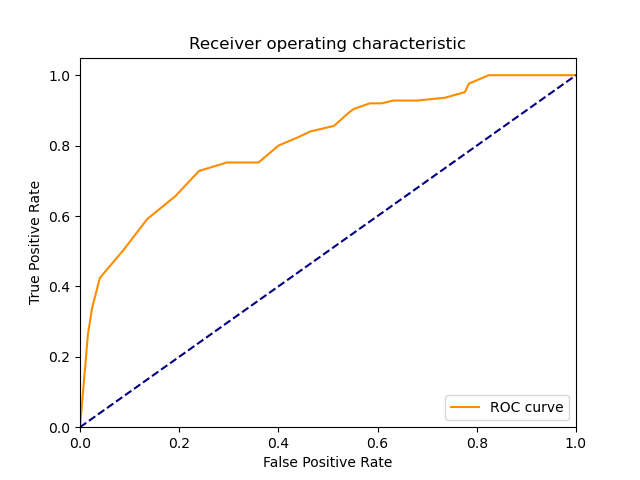
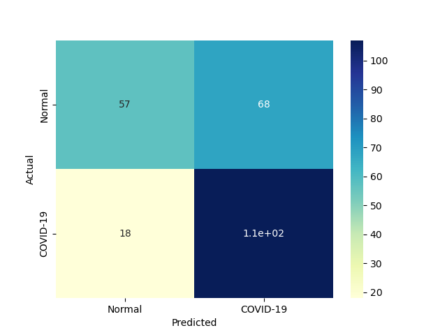
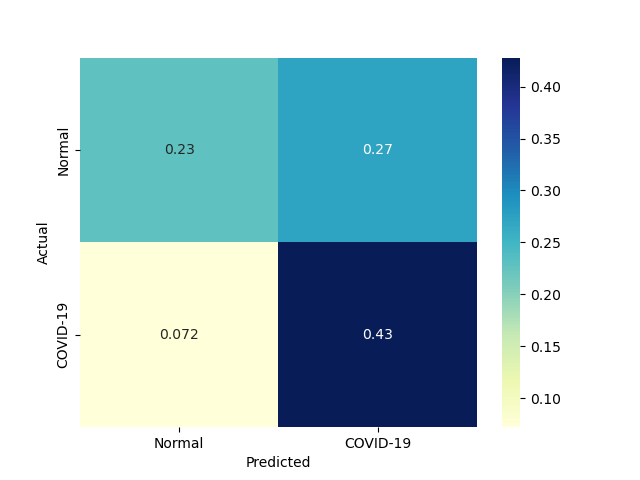
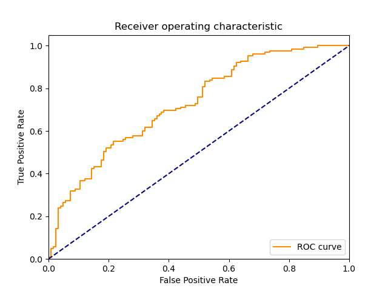
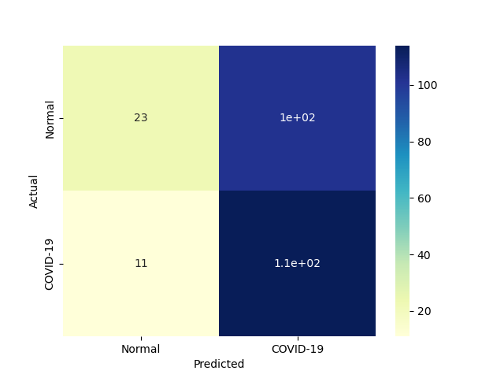
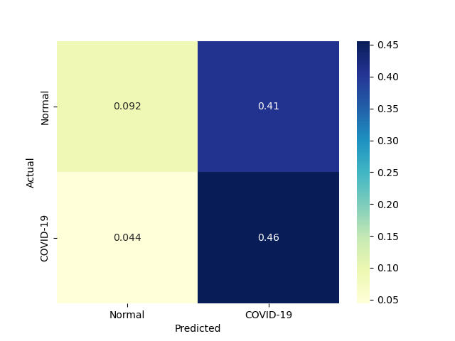
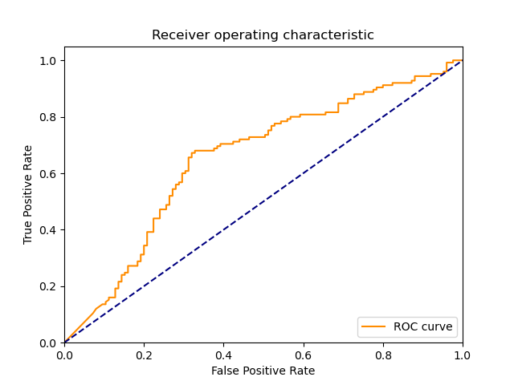
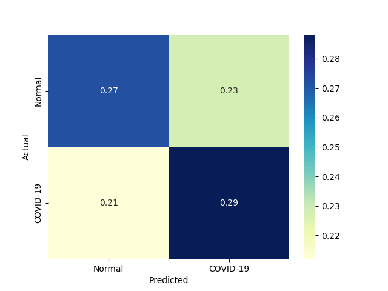
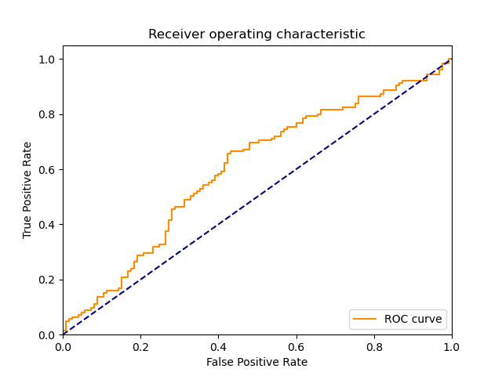

| 4 |
KNeighborsClassifier |
Classifier implementing the k-nearest neighbors vote |
0.000000 |
0.015540 |
115 |
52 |
73 |
10 |
0.920 |
0.416 |
0.611702 |
0.668 |
0.332 |
0.734824 |
0.930187 |
inf |
47.284890 |
 |
|
 |
| 1 |
RealBoost |
An RealBoost classifier |
28.921936 |
0.015546 |
107 |
57 |
68 |
18 |
0.856 |
0.456 |
0.611429 |
0.656 |
0.344 |
0.713333 |
0.905307 |
0.024664 |
45.886491 |
 |
 |
|
| 2 |
BernoulliNBC |
Naive Bayes classifier for multivariate Bernoulli models |
0.000000 |
0.000000 |
103 |
60 |
65 |
22 |
0.824 |
0.480 |
0.613095 |
0.652 |
0.348 |
0.703072 |
0.895802 |
inf |
inf |
|
|
 |
| 3 |
GaussianNBC |
Gaussian Naive Bayes (GaussianNB) |
0.000000 |
0.000000 |
114 |
23 |
102 |
11 |
0.912 |
0.184 |
0.527778 |
0.548 |
0.452 |
0.668622 |
0.772728 |
inf |
inf |
 |
 |
 |
| 0 |
DiscreteNBC |
DiscreteNBC |
0.328145 |
0.156242 |
72 |
68 |
57 |
53 |
0.576 |
0.544 |
0.558140 |
0.560 |
0.440 |
0.566929 |
0.734551 |
1.727677 |
3.628529 |
|
 |
 |
{kind=link}
{kind=link}
{kind=link}
{kind=link}
{kind=link}
{kind=link}
{kind=link}
{kind=link}
{kind=link}
{kind=link}
{kind=link}
{kind=link}
{kind=link}
{kind=link}